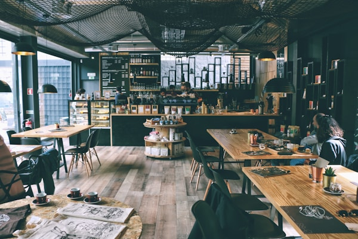

Nuestra Historia
Pasión y tradición en cada taza
Cafetería Aromas nació del sueño de crear un espacio donde el café de especialidad y la calidez humana se encuentren. Desde nuestros inicios, nos propusimos trabajar de la mano con productores locales y de comercio justo para traer a tu mesa granos seleccionados con los más altos estándares de calidad.
Nuestro equipo de baristas se capacita constantemente para perfeccionar métodos de extracción y ofrecerte una experiencia sensorial única. Creemos que cada café cuenta una historia, y queremos compartirla con vos todos los días.
